Соревнования по волейболу в спорткомплексе «Лидер»
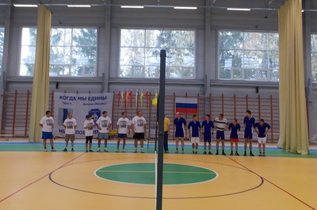
30 сентября 2012 года в спортивном комплексе «Лидер» прошли соревнования по волейболу в рамках
районной Спартакиады 2012 года среди коллективов, организаций, предприятий и учреждений Тарусского
района. В соревнованиях приняли участие 6 команд:
- Команда ПЛ-34
- Команда ДЮСШ
- Команда «Новая волна» (Администрации МР «Тарусский район»)
- Команда «Фобос» (СКБ КП ИКИ РАН)
- Команда «Водяные» (Водоканал)
- Команда «Ветераны»
Места распределились следующим образом:
1 место – команда «Ветераны»
2 место – команда «ДЮСШ»
3 место – команда «ПЛ-34»
Следующий вид соревнований в рамках Спартакиады 2012 года – пулевая стрельба.
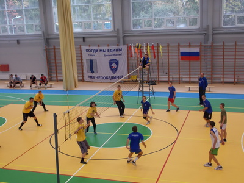
Соревнования пройдут в октябре месяце этого года.
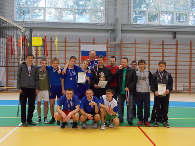
Фестиваль «По старой по дороге по Калужской» в Тарусе

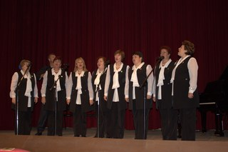
29 сентября 2012 года, в канун празднования 120-летнего юбилея со дня рождения Марины Цветаевой, в
Тарусе прошел областной фестиваль народного творчества «По старой по дороге по Калужской…».
Участниками фестиваля стали самодеятельные коллективы и исполнители из Людинова, Кирова, Юхнова,
Жуковского района, Перемышля и еще нескольких районов нашей области. Тарусу представляли народные
театры Лопатинского СДК и города, Волковской СДК и ансамбль «Тарусские зори».
Исполнительский уровень был довольно высоким, несмотря на довольно сложный репертуар (по условиям
фестиваля это были произведения М.Цветаевой и поэтов «Серебряного века», а также вокальные
произведения на стихи этих авторов).
Лучшими исполнителями среди вокалистов стали Сергей Щербаков (г. Киров), Ирина Точилкина (г. Юхнов),
Светлана Лямзина (г. Людиново). Замечательно прозвучал дуэт тарусянок Людмилы Старухиной и Нонны
Морозовой.
Трудно выделять кого-то из чтецов на фоне выступления заслуженной артистки России Любови Кремневой
(г. Калуга), которая была председателем жюри чтецов. Председатель жюри вокалистов Елена Шумаева
(лауреат международных конкурсов) порадовала зрителей своим участием в гала-концерте.

Украшением концерта стал танцевальный коллектив «Образ» из г. Калуги.
Разъезжались участники поздним вечером под впечатлением от поэзии М.Цветаевой и Тарусы.
Статья и фото – Н.А. Коврижкина
«Кросс нации» в Калуге
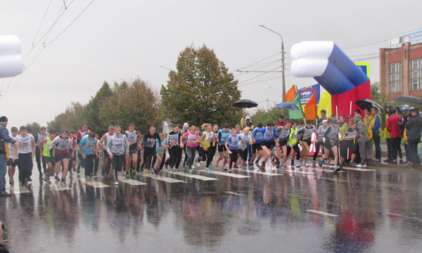
23 сентября, в воскресенье в Калуге на Правом берегу прошел всероссийский день бега - «Кросс нации -
2012». Начало соревнований было запланировано на 11.00 часов утра, но погода внесла свои коррективы:
в 10.30 пошел сильный дождь и соревнования начались раньше. Участников забега это ничуть не смутило,
настроение у всех было боевое.
Всероссийский день бега – это не только самый массовый забег, но и социально значимое событие в жизни
страны. «Кросс Нации» – это привлечение к занятиям физической культурой россиян, и особенно
молодежи; пропаганда здорового образа жизни.
Калужская область впервые приняла участие во всероссийском Дне бега в 2005 году. Тогда в «Кроссе
нации» приняли участие 5 тысяч человек. Первые годы международный день бега проходил в центре Калуги
на улице Кирова. Но с 2010 его перенесли на Правобережье, чтобы не мешать движению. По оценкам
организаторов в этом году на старт вышло около 7500 спортсменов.
От Тарусского района на старт вышли 15 учеников Тарусской средней школы № 2, 20 учащихся Тарусского
профессионального лицея № 34 и 5 сильнейших спортсменов Тарусского района. Учащиеся профлицея бежали
7500 метров, школьникам необходимо было преодолеть 1000 метров. После трудной дистанции в автобусе
всех тарусских спортсменов ждал горячий чай.
Областная агропромышленная выставка-ярмарка «Калужская осень – 2012»
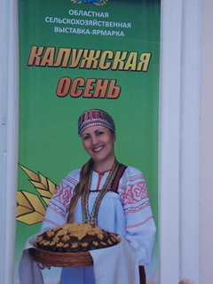
С 20 по 22 сентября 2012 года в демонстрационно-выставочном комплексе Администрации Губернатора
Калужской области и на открытой площадке спорткомплекса «Анненки» прошла областная агропромышленная
выставка-ярмарка «Калужская осень – 2012».
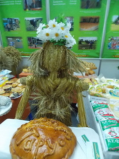
В выставочном зале размещались красочно оформленные демонстрационные стенды, знакомившие посетителей
выставки с достижениями сельских тружеников, с новыми технологиями в агропромышленном комплексе.
В работе выставки от Тарусского района приняли участие: ЗАО «Заря», ООО «Трубецкое», ООО
«Лопатинское», ООО «Тарусская птицефабрика», ОАО «Тарусский молочный завод», ООО «Вознесенье»
(сыроварня), ООО «Тарусский мясокомбинат», «Тарусский хлеб» (ИП Ротарь Н.Ф.), ИП Верзилин Е.А.,
представившие большой ассортимент молочной продукции, вкусной выпечки, ароматных мясных рулетов,
мясных полуфабрикатов, аппетитных пельменей. КФХ «Успех» (В.В. Семенов) представило мед со своей
пасеки и широкий ассортимент овощей, выращенных на своих грядках. Самой большой популярностью у
посетителей пользовались рыба, икра и морепродукты ООО «Лукоморье» и фиточаи ООО «Здоровье
нации».
В работе выставки также принял участие Туристско-информационный центр, представивший фотогалерею о
развитии агротуризма в Тарусском районе.
В номинации «За лучшую экспозицию» Тарусский район был отмечен дипломом.
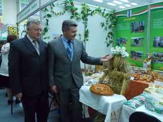
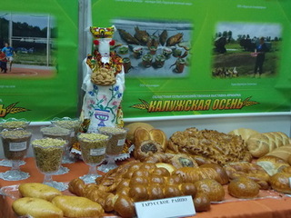
Легкоатлетический кросс
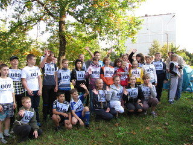
8 сентября 2012 года на асфальтированной площадке по улице М. Цветаевой напротив дома № 15 состоялся
лёгкоатлетический кросс, посвящённый 200-летию Бородинского сражения.
В соревнованиях приняло участие около 80 человек. На старт вышли учащиеся Тарусских средних школ № 1
и № 2, студенты и люди более старшего возраста.
Организаторами соревнований выступили отдел по туризму, спорту и социальному развитию администрации
МР «Тарусский район», Детско-юношеская спортивная школа и ООО «Ромашка».
В возрастной группе 7-14 лет среди девушек призовые места распределились следующим образом:
- 1 место – Екатерина Ляпина (ТСОШ №1);
- 2 место – Ирина Татьянина (ТСОШ №1);
- 3 место – Алина Желяева (ТСОШ №2)
Возрастная группа 7-14 лет юноши:
- 1 место – Андрей Шмидт (ТСОШ №1);
- 2 место – Валентин Лысов (ТСОШ №1);
- Валентин Ткаченко (ТСОШ №1);
Возрастная группа 14 лет и старше (женщины):
- 1 место - Дарья Иванова (РПА);
- 2 место – Алина Баранецкая (ТСОШ №2);
- 3 место – Антонина Антипова (ТСОШ №1)
Возрастная группа 14 лет и старше (мужчины):
- 1 место – Завитов Андрей;
- 2 место- Дмитрий Королёв (ТСОШ № 2);
- 3 место – Максим Кошкин (ПЛ № 34)
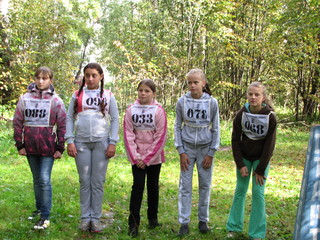
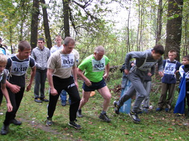